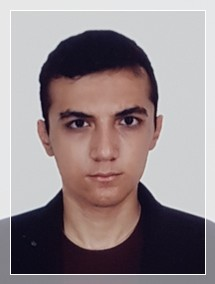

About My self
I Yassin Riyazi As a Mechanical engineer with a passion for robotics and artificial intelligence, I thrive on designing innovative solutions that bridge the gap between cutting-edge technology and mechanical systems. My expertise lies in leveraging AI-driven automation to enhance robotics applications, creating efficient and intelligent machines that drive progress in diverse industries.
Research Interest:
|
|
|
|

Publications:
Leveraging Koopman operator and Deep Neural Networks for Parameter Estimation and Future Prediction of Duffing oscillators.
[Abs] [Slides] [Code]
Enhanced Gearbox Fault Diagnosis with Fusion LSTM-CNN Network.
N.Ghanbari, Y.Riyazi and F.A.Shirazi , {Under submission }
Automatically Generating Language Descriptions for Remote Sensing Images to the Machine Vision and Image Processing
Y.Riyazi, A.Zohrevand, S.M.Sajjadi and R.Hosseini , {In preparation (The conference paper will be submitted on December of 2023.)}
Selected Projects:
Hover your mouse over the area outside the gallery below to view the
description. Feel free to click on the slides to open the corresponding
GitHub repository.